After Hell Baal, progress through the endgame by monster level.
Road
92949698100102104106108110Hell monster level →
SummitsThe DescentAn echo below each band. Walk in every difficulty; sigils skip floors in Hell.

Sanctuary StonesCube a stone with a gem in Harrogath, Hell. Cube three to climb a tier.
 I92II95
I92II95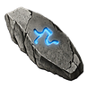
III97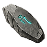
IV98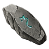
V99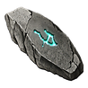
VI100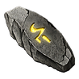
VII101VIII102IX103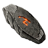
X104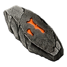
XI105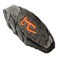
XII106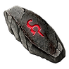
XIII107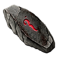
XIV108 XV109
XV109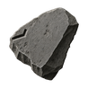
Halls92Crypt of the VigilDefiled Shrines in Stone maps → seal quarters → cube in Harrogath → the Crypt.


Terror ZonesA Worldstone Shard terrorizes a whole act in Hell.
2 above your level, up to 96
Elites up to 99
After Baal
Stone FragmentsEach act boss drops a fragment; cube all five in Harrogath to open the Fractured Halls.Sanctuary StonesHell's monsters drop these stones; cube one with a gem in Harrogath to open a sealed place.ReagentsMonsters drop reagents; cube one with an item to remake it. Leaves and JournalsLeaves are unique charms; cube one with two other unique small charms to bind it into a Journal.Gilded FallenThese rare gold Fallen carry treasure; catch one before it teleports away.The ubersDiablo II's uber bosses still wait in Hell; gather their keys and organs to fight them.
Leaves and JournalsLeaves are unique charms; cube one with two other unique small charms to bind it into a Journal.Gilded FallenThese rare gold Fallen carry treasure; catch one before it teleports away.The ubersDiablo II's uber bosses still wait in Hell; gather their keys and organs to fight them.
Sanctuary StonesHell's monsters drop these stones; cube one with a gem in Harrogath to open a sealed place.ReagentsMonsters drop reagents; cube one with an item to remake it.Leaves and JournalsLeaves are unique charms; cube one with two other unique small charms to bind it into a Journal.Gilded FallenThese rare gold Fallen carry treasure; catch one before it teleports away.The ubersDiablo II's uber bosses still wait in Hell; gather their keys and organs to fight them.Beyond the Worldstone
Off the Worldstone Chamber lies Arreat Descent, and below it the Descent: five bands of floors, each deeper and harder, with an echo of an Evil at the bottom of each.
Once Baal has fallen, take the new stairs in the Worldstone Chamber down to Arreat Descent and delve into Hell itself.
- Kill Baalin any difficulty
- Worldstone Chambertake the new stairs down
- Arreat Descentdelve into Hell itself
- Band Iends at the Echo of Mephisto
- Deeper bandsa stair past each echo
- The Convergenceall the Unborn at once
 The DescentBands of floors below Arreat Descent; clear each band to face its Echo.Sanctuary StonesSealed maps in fifteen tiers; cube a stone with a gem in Harrogath to enter one.The SentinelsShrine hunters guard the Defiled Shrines in Stone maps; kill them for their seal quarters.
The DescentBands of floors below Arreat Descent; clear each band to face its Echo.Sanctuary StonesSealed maps in fifteen tiers; cube a stone with a gem in Harrogath to enter one.The SentinelsShrine hunters guard the Defiled Shrines in Stone maps; kill them for their seal quarters. Crypt of the VigilCube the four seal quarters to enter the Crypt and face the Last Vigil.HeavenThe Echo of the Veiled Prophet waits in the Silver City; cube the five Seal trophies to reach it.
Crypt of the VigilCube the four seal quarters to enter the Crypt and face the Last Vigil.HeavenThe Echo of the Veiled Prophet waits in the Silver City; cube the five Seal trophies to reach it. The WordlessThe Veiled Prophet's amulet; cube it with runes to awaken each stage.
The WordlessThe Veiled Prophet's amulet; cube it with runes to awaken each stage. Horadric VaultA sealed Kurast temple full of treasure; cube its sigil to face the Gilded Wretch.The ConvergenceHell's summit; cube the five Echo trophies to fight all five Unborn at once.CorruptionCube a Hellforge Ember with armor, a weapon, a ring or an amulet to change it forever, for good or ill.
Horadric VaultA sealed Kurast temple full of treasure; cube its sigil to face the Gilded Wretch.The ConvergenceHell's summit; cube the five Echo trophies to fight all five Unborn at once.CorruptionCube a Hellforge Ember with armor, a weapon, a ring or an amulet to change it forever, for good or ill. New runes and runewordsThree new wax runes make new runewords; socket the runes in order into a plain item.Oils and wax runesThe Sentinels drop oils and wax runes; cube an oil with an item to add a chosen stat.New encountersGilded Fallen, vaults and new bosses; read about each fight in the order you meet it.Sigils and keysSigils and keys open the endgame's doors; cube them in Harrogath on Hell.Terror ZonesA Worldstone Shard terrorizes a whole act in Hell; its boss drops an Ancient statue.
New runes and runewordsThree new wax runes make new runewords; socket the runes in order into a plain item.Oils and wax runesThe Sentinels drop oils and wax runes; cube an oil with an item to add a chosen stat.New encountersGilded Fallen, vaults and new bosses; read about each fight in the order you meet it.Sigils and keysSigils and keys open the endgame's doors; cube them in Harrogath on Hell.Terror ZonesA Worldstone Shard terrorizes a whole act in Hell; its boss drops an Ancient statue.Difficulty
Hell's ladder ends at 109.
Normal1–43Blood Moor to the Throne of Destruction
Nightmare36–68The campaign again
Hell67–87The campaign once more, to Baal
Endgame92–109Descent floors and Stone tiers
Summit110The ubers, the Convergence, Heaven
60% · 80%Normal and Nightmare monster density, as a share of Hell
46–55Normal monster levels in the endgame
60% → 125%Each echo’s share of that difficulty’s Baal, band I to the last
Tier 4 · Tier 7In Hell: wardens first, then more life
How the bosses scale
The dotted gold line marks vanilla Uber life in Hell.
0.8× → 1.51×a vanilla uber: the echoes, first band to last
up to 4.5×a vanilla uber: the Shade of Diablo, 3,000,000 life
×4.5every boss’s life at eight players, as in Diablo II
Every boss and its life (125)
- AndarielLevel 75 · 60,031 life
- MephistoLevel 87 · 94,320 life
- DurielLevel 88 · 84,524 life
- DiabloLevel 94 · 113,812 life
- Ithmar the WaykeeperLevel 95 · 29,345 life
- GnashrikLevel 95 · 253,907 life
- Haelric the JailerLevel 95 · 253,907 life
- Mordrick the BlightwardenLevel 95 · 253,907 life
- Qadir the EntombedLevel 95 · 253,907 life
- Echo of MephistoLevel 97 · 547,791 life
- Kezzhar SaltfangLevel 98 · 324,954 life
- Queen AraneaeLevel 98 · 324,954 life
- Sadiq the PoisonerLevel 98 · 324,954 life
- Wulfric the CocoonedLevel 98 · 324,954 life
- BaalLevel 99 · 493,701 life
- Elspeth the UnburiedLevel 100 · 547,791 life
- Mortlake the Grave-KeeperLevel 100 · 547,791 life
- Vhassun the UnshrivenLevel 100 · 547,791 life
- Wenna RotbowLevel 100 · 547,791 life
- Echo of AndarielLevel 100 · 660,076 life
- Echo of the ButcherLevel 101 · 585,294 life
- Qasirah the SunflayerLevel 101 · 585,294 life
- Rahkesh the Pale ClawLevel 101 · 585,294 life
- Barrow SentinelLevel 102 · 202,592 life
- Tomb SentinelLevel 102 · 202,592 life
- Aldous Vane the Salt-JailerLevel 102 · 622,580 life
- King FahirLevel 102 · 622,580 life
- Kwazu the Doll-MakerLevel 102 · 622,580 life
- Ngozu the BoundLevel 102 · 622,580 life
- Forge SentinelLevel 103 · 205,582 life
- Tomb SentinelLevel 103 · 205,582 life
- Ixtzal the Plague-DrumLevel 103 · 660,076 life
- Oyuun the Ash-MotherLevel 103 · 660,076 life
- The CuratorLevel 103 · 660,076 life
- Toghrul SaltbinderLevel 103 · 660,076 life
- Echo of DurielLevel 103 · 772,222 life
- Barrow SentinelLevel 104 · 208,572 life
- Tomb SentinelLevel 104 · 208,572 life
- Inquisitor Eldric VosseLevel 104 · 697,432 life
- Ssithraxa the Brood-MotherLevel 104 · 697,432 life
- Vizier Kharos DhalLevel 104 · 697,432 life
- Barrow SentinelLevel 105 · 211,562 life
- Forge SentinelLevel 105 · 211,562 life
- Brannoch BarkboundLevel 105 · 734,771 life
- Grenhorn the Moon-HowlerLevel 105 · 734,771 life
- Kyrene the OathbreakerLevel 105 · 734,771 life
- The Warder of DaedessaLevel 105 · 734,771 life
- Barrow SentinelLevel 106 · 214,552 life
- Tomb SentinelLevel 106 · 214,552 life
- Ancient Imhar the SleeplessLevel 106 · 772,222 life
- Gharruk BloodhornLevel 106 · 772,222 life
- Kharazad the Thrice-SlainLevel 106 · 772,222 life
- Sahra the Night-VeiledLevel 106 · 772,222 life
- Echo of DiabloLevel 106 · 884,459 life
- Barrow SentinelLevel 107 · 217,542 life
- Rime SentinelLevel 107 · 217,542 life
- Tomb SentinelLevel 107 · 217,542 life
- Grimskar HearthbaneLevel 107 · 809,590 life
- Hrimgar the Rime-MawLevel 107 · 809,590 life
- Keeper SharazLevel 107 · 809,590 life
- Voivode Stanimir the UnthawedLevel 107 · 809,590 life
- Barrow SentinelLevel 108 · 220,532 life
- Rime SentinelLevel 108 · 220,532 life
- Tomb SentinelLevel 108 · 220,532 life
- Ashkarn, Ram-Lord of DestructionLevel 108 · 847,012 life
- Durgash, Sapper of DestructionLevel 108 · 847,012 life
- Osgar the Barrow-KingLevel 108 · 847,012 life
- Varkhos the SiegemasterLevel 108 · 847,012 life
- Zhulmeq the UndermawLevel 108 · 847,012 life
- Rime SentinelLevel 109 · 223,522 life
- Tomb SentinelLevel 109 · 223,522 life
- Bertalan the Bog-FedLevel 109 · 884,459 life
- Exarch Szoreth the UnboundLevel 109 · 884,459 life
- Mother Ilka of the Black ReedsLevel 109 · 884,459 life
- Zhivena the Ice-WidowLevel 109 · 884,459 life
- Echo of BaalLevel 109 · 996,675 life
- Rime SentinelLevel 110 · 226,512 life
- Tomb SentinelLevel 110 · 226,512 life
- LilithLevel 110 · 660,000 life
- Uber BaalLevel 110 · 660,000 life
- Uber DiabloLevel 110 · 660,000 life
- Uber DurielLevel 110 · 660,000 life
- Uber IzualLevel 110 · 660,000 life
- Uber MephistoLevel 110 · 660,000 life
- Shade of Barrow SentinelLevel 110 · 750,000 life
- Shade of Tomb SentinelLevel 110 · 850,000 life
- Ailill the Last HeirLevel 110 · 921,903 life
- Echo of Juris KhanLevel 110 · 921,903 life
- Ragnhild the Ash-BrideLevel 110 · 921,903 life
- The Ice-Drowned MysticLevel 110 · 921,903 life
- Ulfrik CinderhandLevel 110 · 921,903 life
- Vulgrath, Torch of DestructionLevel 110 · 921,903 life
- Shade of Rime SentinelLevel 110 · 950,000 life
- Avatar of AzmodanLevel 110 · 1,000,000 life
- Sevra the BoneboundLevel 110 · 1,000,000 life
- Shade of BartucLevel 110 · 1,000,000 life
- Shade of Zoltun KulleLevel 110 · 1,000,000 life
- Shade of Forge SentinelLevel 110 · 1,100,000 life
- The Last VigilLevel 110 · 2,000,000 life
- Echo of the Veiled ProphetLevel 110 · 2,500,000 life
- Shade of DiabloLevel 110 · 3,000,000 life
- Echo of InariusLevel 111 · 160,827 life
- Forge SentinelLevel 111 · 229,502 life
- Rime SentinelLevel 111 · 229,502 life
- Echo of Bartuc, Warlord of BloodLevel 111 · 959,318 life
- Haddar the Blood-SwornLevel 111 · 959,318 life
- Prelate Ossan the ChainedLevel 111 · 959,318 life
- Skarvath, Thrall of the WarlordLevel 111 · 959,318 life
- Vhastrol, Jailer of HatredLevel 111 · 959,318 life
- Barrow SentinelLevel 112 · 232,492 life
- Rime SentinelLevel 112 · 232,492 life
- Tomb SentinelLevel 112 · 232,492 life
- Echo of Black JadeLevel 112 · 996,675 life
- Echo of LazarusLevel 112 · 996,675 life
- Echo of Red VexLevel 112 · 996,675 life
- Echo of Tal RashaLevel 112 · 996,675 life
- Ghorvax, Herald of DestructionLevel 112 · 996,675 life
- Zarkhesh, Seeker of DestructionLevel 112 · 996,675 life
- Avatar of BelialLevel 113 · 1,000,000 life
- Vardek the BoneboundLevel 113 · 1,000,000 life
- Andariel, Anguish UnbornLevel 113 · 2,500,000 life
- Baal, Destruction UnbornLevel 113 · 2,500,000 life
- Diablo, Terror UnbornLevel 113 · 2,500,000 life
- Duriel, Pain UnbornLevel 113 · 2,500,000 life
- Mephisto, Hatred UnbornLevel 113 · 2,500,000 life